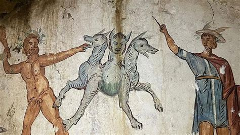

Problématique Comment les Anciens se représentaient-ils les Enfers ? Et dans quelle mesure les documents choisis représentent-ils la vision des Enfers qu’avaient les Anciens selon vous ?
Les Enfers, pour les Anciens, étaient un endroit sacré. Pour eux, ne pas y aller était pire que de ne pas être enterré. Nous verrons, à l’aide de peintures et de fresques réalisées par des artistes, la vision des Anciens croyant en la mythologie.Dans un premier temps nous verrons les différentes étapes pour accéder au Styx et aux restes de l’Enfers : 
Nous pouvons voir que, dans la mythologie, il existe plusieurs étapes avant d’accéder aux Enfers, comme le montre une fresque réalisée sur un tombeau à la fin du 3e siècle (actuellement exposée à Naples). Un chien à trois têtes, plus connu sous le nom de Cerbère, en est le gardien et constitue la première porte des Enfers. Après avoir franchi cette étape, trois juges décideront de l’endroit où vous passerez le reste de votre vie : soit le Tartare (pour les personnes ayant commis des actes mauvais), soit le Champ des Pleurs (pour les âmes intermédiaires), soit les Champs Élysées (pour les âmes vertueuses).
On peut aussi dire que cette fresque a été dessinée sur ce tombeau pour avertir la personne qu’elle rencontrera ce monstre en premier avant de faire face aux autres créatures.s
À côté de Cerbère, nous voyons Hercule qui effectuait son dernier travail, lequel consistait à amener la bête au roi. On peut dire qu'ils croyaient donc en Hercule ainsi qu'en tous les autres dieux concernés, directement ou indirectement, par cette histoire.
À droite de l’œuvre, nous pouvons voir Hermès, le messager des dieux. Celui-ci est représenté avec son pétase (chapeau) et son bâton, ce qui prouve qu’ils croyaient en tous les dieux de l’Olympe."
Les couleurs de cette œuvre restent assez claires, ce qui pourrait mettre en avant Hercule accomplissant sa quête, ainsi qu'Hermès qui tente de calmer le chien avec son bâton.